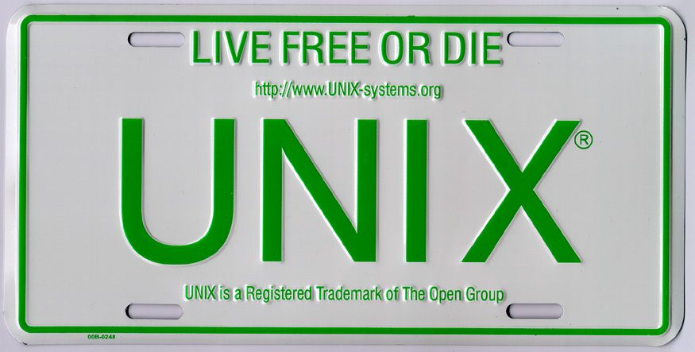

Limitations of the Unix philosophy and the ultimate solution to parsing "Write programs that do one thing and do it well. Write programs to work together. Write programs to handle text streams, because that is a universal interface". This the widely accepted There is probably nothing wrong with the first two clauses; those are the basic principles of modular design. But the last clause (about text streams), although being accepted by many people, is not quite right. Here I hope to explore a bit of the reason behind it, and from that I propose a simple and once-and-for-all solution to the parsing problem. Text is a universal interface, but an inconvenient universal interfaceWe all have observed how typical Unix programs work together:
All seem to work well? But how does the second program extract information from the text stream? Here is exactly where the pain starts. In order to put information into a text stream, the first program has to "encode" it, and the second program has to "decode " the received text. The encoding part is easy, we just decide on some "syntax", for example "each line contains comma-separated fields". But when decoding, we will need something like" regular expressions" if the encoding of information is simple enough, but we will need a "parser" if we have to communicate something of a "recursive" nature, such as program text. For regular expressions, we could use Perl, AWK, or a regexp library in any language, but for the parser, we have no choice but painstakingly writing it. Even with modern parsing technologies, writing a parser is still way too much pain. They are hard to learn and hard to tweak. The language at hand may have a horribly designed syntax, making it very hard to parse. Ambiguity, left recursion, context sensitiveness... Those problems have never stopped harassing compiler writers. The need for a standard binary formatThose problems suggests that it is problematic to use text to represent data structures such as abstract syntax trees (ASTs). It is just unreasonably hard to decode the information that we encoded a minute ago. Indeed, text is a universal interface, but it is not the only one. There are many other universal interfaces around. Why should we stick to text? If we think of it in a type theoretic way, text streams are only one type: string. We have many other types: integers, booleans, records, ... Why should we encode all other types into strings? We need a more general and efficient format that can represent all types, instead of converting them into strings. In fact, text is part of a more general concept which I will call "standard binary format" in this post. Some people hate the term "binary formats", but they haven't realized that all data in computers and networks are in binary formats. The so-called "plain text" is just binary bits encoded in ASCII or Unicode, so they are also "binary formats". Just think about this question: If there were no standardization of text (such as ASCII or Unicode) until today, would anybody still use text as an interface? Obviously No. If everybody uses a different encoding of the alphabet, we will have no way to display text, not to mention to use it as an "interface" for other kinds of information. So the point is not really about "text" or binary, it is all about "standardization". If we have a "standard binary format" for all types of data (including text), we would have a much better universal interface. Data structures will be passed around as they are, and there will be no need for complicated decoding procedure. This is a principle originated from the functional programming community: "avoid encoding." We have many candidates for standard binary format: XML, JSON, protocol buffers, S-expressions, ... I'll try to analyze their capabilities and limitations later, but let's assume such a format can be designed and standardized. Programs should not be encoded as text eitherNow suppose that we have a standard binary format for all data structures, we can also use it to represent ASTs. We will need extensions for existing editors or browsers. The editors or browsers will "render" the ASTs into various styles. They could be either text, graphics, sounds or some other sensory signals. The editors will allow the programmer to manipulate the ASTs directly using natural and intuitive commands, and they will save the ASTs in a standard binary format. By doing so, we completely eliminate the need for parsers because compilers can just read in the ASTs directly. We also completely eliminate the concept of "syntax". Compiler and IDE writers will be living a much happier life and programmer productivity will be greatly enhanced, because we will easily have much better editor support for ALL programming languages. Don't get me wrong. I'm not saying that parsing is not an interesting problem. In fact, it is fascinating. Maybe it is the pure interest in the problem itself that is driven language designers to use syntaxes are harder rather than easier to parse, thus creating problems rather than solve problems. You may think that extending editors and browsers is too much work, but actually it can be quite easy. In fact, a standard binary format for ASTs can be much simpler than formats like JPEG. Every editor and browser should be easily extensible to it. The only issue is how to make people agree on a standard. We may need some sort of committee to do the standardization. But aren't we doing that for each new language, to make us agree on a syntax? This solution only requires us to do the standardization for ASTs once, for all languages. This is the ultimate solution to the parsing problem, because it eradicate the root of the problem by changing the way we represent and manipulate programs. It is a trivial solution from a research point of view, but it demonstrates how a hard problem can be solved in a trivial way. However, the implication of this solution is definitely non-trivial. It will open up many surprisingly interesting possibilities. UPDATE 4/2/2012: In order to demonstrate how our programming environment can change once we have a standard format for ASTs, I developed a "structural diff" tool called "ydiff". You can find information about it here. |